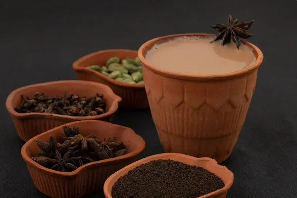

Masala Chai

Description
Masala Chai is a traditional spiced tea made by brewing black tea with aromatic spices like cardamom and ginger. It’s warm, flavorful, and perfect to enjoy during chilly mornings or relaxing evenings.
ingredients
- 1 cup of water and one cup of milk
- 1 tsp black tea leaves
- 1-2 cardamom pods
- small piece of ginger(optional)
- sugar to taste
steps
- Boil water with crushed cardamom and ginger.
- Add tea leaves and boil for 2-3 minutes.
- Add milk and sugar, and simmer for 2 more minutes.
- Strain and serve hot.
Go back